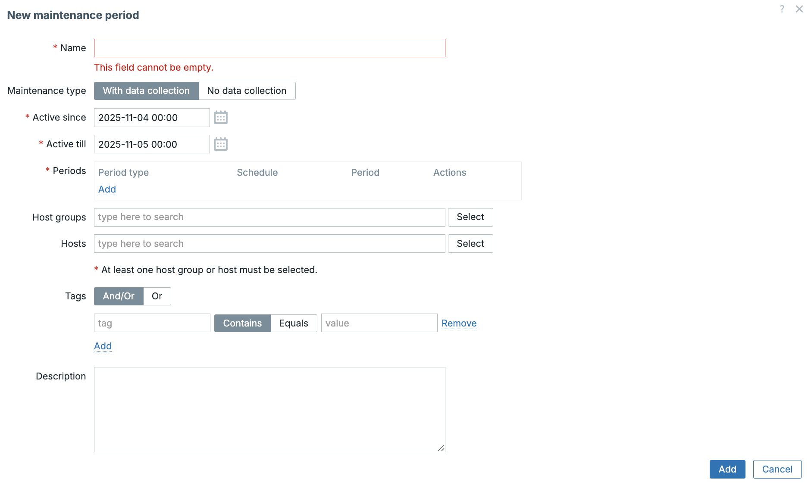

Maintenance
The Purpose of Maintenance Periods
A Maintenance Period in Zabbix is a defined time window for planned work (e.g., software updates, configuration changes). Its primary goal is to suppress problem notifications (alerts) for the affected hosts or applications to prevent alert fatigue.
During maintenance, Zabbix still monitors systems, but alert actions (emails, tickets, etc.) are typically paused.
Key Maintenance Configuration Options
1. Maintenance Type
The Maintenance section is located in the main menu under Data collection
→ Maintenance. To create a new maintenance window, click Create maintenance.
When doing so, Zabbix presents two available maintenance types, allowing you to
choose the one that best fits your needs.
This defines how Zabbix handles data during the maintenance window:
| Type | Description | Trigger Processing | Data Collection | Best Used For |
|---|---|---|---|---|
| With data collection | Data is collected as usual, but problem notifications are suppressed (via a default Action condition). | Processed | Collected | Routine updates where data continuity is important. |
| No data collection | Data collection is completely paused for the items on the maintained host(s). | Not Processed | Ignored/Not Collected | Major hardware upgrades or OS reloads where the host is completely unavailable. |
Note
When using no data collection, host and proxies will still sent data to the
Zabbix server. However the server will not process the data and store it into
the database.
2. Time Window Definition (Active Since / Active Till)
The Start and End dates determine the overall duration of the maintenance rule. Specific maintenance execution times are configured on the Periods tab. Each defined period must fall within the maintenance window’s overall lifespan.
3. Maintenance Periods (The Schedule)
This tab defines the precise scheduling:
- One Time Only: A single, non-recurring window.
- Daily: A recurring schedule every N days.
- Weekly: A recurring schedule on specific days of the week.
- Monthly: The most flexible, allowing selection by Day of Month or Day of Week within a month (e.g., the last Sunday).
Info
Active Since/Till will not put the server in maintenance. It is the maintenance period that will show that the server is in maintenance or not in the frontend.

4. Scope (Hosts and Host Groups)
You define the scope by selecting the specific Hosts and/or Host Groups that the rule applies to.
5. Problem Tag Filtering (Advanced Suppression)
This allows you to suppress only specific problems during maintenance by
matching Problem Tags (e.g., service:database), which is useful if you
need to be alerted to hardware failures during software maintenance.
6. Maintenance visibility
When a server is placed into maintenance mode, this state is clearly indicated in the Zabbix frontend, making it easy to distinguish whether a host is currently under maintenance or not.
During maintenance, an orange wrench icon is displayed next to the host name in the following views:
- Dashboards
- Monitoring → Problems
- Inventory → Hosts → Host inventory details
- Data collection → Hosts
In addition, hosts in maintenance are highlighted with an orange background on Monitoring → Maps.
By default, problems associated with hosts in maintenance are suppressed and therefore not shown in the frontend. However, Zabbix can be configured to display these suppressed problems. This behavior can be enabled by selecting the Show suppressed problems option in the following locations:
- Dashboards – in the configuration of the Problem hosts, Problems, Problems by severity, and Trigger overview widgets
- Monitoring → Problems – in the filter settings
- Monitoring → Maps – in the map configuration
- Global notifications – in the user profile configuration
When suppressed problems are configured to be shown, a dedicated status icon is displayed next to the problem. Hovering the mouse pointer over this icon reveals additional details about the suppression state.

Time Zones and Maintenance Schedule Logic
Understanding how time zones work in Zabbix is essential for scheduling reliable maintenance tasks. Zabbix handles time zones differently depending on whether a maintenance window is one-time or recurring.
For one time maintenance, the start and end times are interpreted in the frontend user's local time zone. The same time zone configured for the logged-in user. In contrast, recurring maintenance is evaluated based on the Zabbix server's time zone, ensuring that the recurrence pattern remains consistent, even if users in different regions view it.
This distinction is important to remember: a maintenance period that appears correct in your local time might execute at a different time if the server is in another time zone.
Time Zone Rules for Maintenance Periods
| Period Type | Time Zone Used for Execution | Displayed Time Zone | Implication |
|---|---|---|---|
| One Time Only | User's Browser Time Zone | User's Browser Time Zone | The absolute UTC time is stored based on the user's view. |
| Daily, Weekly, Monthly | Zabbix Server Time Zone | User's Browser Time Zone | The recurring logic (e.g., "start at 02:00") is executed based on the time zone configured on the Zabbix Server operating system. |
Active since / Active till |
User's Browser Time Zone | User's Browser Time Zone | These bounding dates are based on the time zone of the user who configured them. |
Info
It's Good Practice: to use a common time zone (e.g., UTC) across the
Zabbix Server, the database, and the PHP frontend configuration for predictable
results, especially with recurring periods and DST changes. Another way is
to add a clock widget to the dashboard with the Zabbix server time.
Backend Process and Configuration
The Timer Process: The Engine of Maintenance
The process responsible for calculating and initiating maintenance periods is the
Zabbix Timer process (controlled by StartTimers).
- Recalculation Interval (The Check): The Timer process checks whether a host's status must change to/from maintenance at 0 seconds of every minute. * This means the maintenance window will start and stop with a maximum latency of 60 seconds after the scheduled time.
- Configuration Cache: Maintenance definitions are stored in the database and loaded into the Zabbix Server's Configuration Cache. The Timer uses this cache to determine host status.
Info
Only the first timer process handles host maintenance updates. Problem suppression updates are shared between all the timers.
Key Zabbix Server Configuration (zabbix_server.conf)
The overall efficiency of maintenance logic depends on these parameters:
| Parameter | Zabbix 8.0 Default Value | Purpose in Relation to Maintenance |
|---|---|---|
CacheUpdateFrequency |
10 | Defines how often (in seconds) the Zabbix Server updates its configuration cache from the database. A change to a maintenance period will take effect within 10 seconds. |
StartTimers |
1 |
The number of Timer processes to start. These are the processes that execute the maintenance calculation. |
CacheSize |
8M |
The size of the configuration cache. Insufficient size can impact the Timer's ability to quickly process status changes in large environments. |
Example: Monthly Recurring Maintenance Setup
Scenario: Routine updates on all Database Servers on the last Sunday of every month at midnight for 2 hours. Only suppress problems related to the Database Service.
| Field/Tab | Setting | Explanation |
|---|---|---|
| Name | Monthly DB Patching - Last Sunday |
Descriptive name. |
| Maintenance type | With data collection | Continue data collection. |
| Periods Tab | Period type: Monthly |
Selects the schedule type. |
| Periods Tab | Day of week: Sunday / Week of month: Last |
Defines the precise day. |
| Periods Tab | Start time: 00:00 / Duration: 2 hours |
Defines the 00:00 to 02:00 window. |
| Hosts & Groups Tab | Host Group: Database Servers |
Defines the scope. |
| Tags Tab | Tag evaluation: AND |
Ensures both conditions (maintenance and tag) are met for suppression. |
| Tags Tab | Tag: service Operator: = Value: database |
Crucial: Only problems with the tag service:database are suppressed. |

Execution Summary
- At 00:00 (Server Time Zone), the Timer changes the host status to "Maintenance."
- Data collection continues.
- Any problem event is filtered by the Action: If the host is in maintenance AND
the problem has the tag
service:database, the alert is suppressed. - If a hardware problem (e.g., no matching tag) occurs, the alert will still be sent, as only the database service issues are suppressed.
- At 02:00, the Timer ends the maintenance, and all alerting resumes.
API Integration for Maintenance Management
For professional Zabbix monitoring setups that require dynamic scheduling, integration with change management workflows, or complex multi-system orchestration, the Zabbix API is the primary tool for managing maintenance periods.
The key method used for maintenance management is maintenance.create (and
corresponding .get, .update, and .delete methods).
Why Use the API for Maintenance?
- ITSM Integration: Allows automated creation of maintenance windows when a Change Request (CR) is approved in an external system (e.g., ServiceNow, Jira), ensuring alerts are suppressed only during authorized work.
- Automation: Facilitates the management of maintenance templates using infrastructure-as-code tools (like Ansible or Terraform).
- Dynamic Scheduling: Enables the creation of immediate, short-term maintenance windows directly from operational scripts.
Key Parameters for maintenance.create
When calling the maintenance.create method, you send a JSON-RPC request containing
several crucial parameters that mirror the frontend configuration:
| API Parameter | Frontend Equivalent | Description |
|---|---|---|
name |
Name | The name of the maintenance period. |
active_since |
Active Since | Unix timestamp (seconds) when the maintenance rule becomes active. |
active_till |
Active Till | Unix timestamp (seconds) when the maintenance rule is deactivated. |
maintenance_type |
Maintenance Type | 0 for "With data collection" (default), 1 for "No data collection". |
hostids |
Hosts | An array of Host IDs (hostid) to be put into maintenance. |
groupids |
Host Groups | An array of Host Group IDs (groupid) to be put into maintenance. |
timeperiods |
Periods Tab | An array defining the precise recurring or one-time schedule. |
tags |
Tags Tab | An array defining the problem tags for filtering (optional). |
The timeperiods Parameter (Schedule Definition)
The timeperiods array defines the exact schedule. Key elements include:
timeperiod_type: The type of schedule (0for one-time,4for monthly, etc.).start_time: The time of day the maintenance starts (in seconds from midnight, based on Zabbix Server Time Zone).period: The duration of the maintenance window in seconds.dayofweek/dayofmonth: Used for recurring schedules.
Practical Example: Creating Maintenance via the API
This curl command demonstrates how to programmatically create the "Last Sunday
of the Month" maintenance window, which runs at midnight for 2 hours, and applies
to host group ID 4.
Note
You must replace <ZABBIX_SERVER_IP_OR_DNS> with your server's address and
"YOUR API TOKEN" with an active token from a successful user.login API
call. The Host Group ID (e.g., "4") must be known beforehand. This id
can be found in the url when going to the host group` in the Zabbix menu.
curl -i -X POST \
-H 'Content-Type: application/json-rpc' \
-H 'Authorization: Bearer <YOUR API TOKEN>' \
-d '{
"jsonrpc": "2.0",
"method": "maintenance.create",
"params": {
"name": "Monthly DB Patching via API",
"active_since": 1748822400,
"active_till": 1780444800,
"maintenance_type": 0,
"groups": [
{ "groupid": "4" }
],
"timeperiods": [
{
"timeperiod_type": 4,
"start_time": 0,
"period": 7200,
"dayofweek": 64,
"every": 5,
"month": 4095
}
]
},
"id": 1
}' \
http://<ZABBIX_SERVER_IP_OR_DNS>/api_jsonrpc.php
Understanding the Time Period Parameters
Let's go over what we just did here to have a better understanding.
timeperiod_type: 4 — Monthly Period
This defines the type of recurrence for the maintenance period.
| Value | Meaning |
|---|---|
| 0 | One-time |
| 2 | Weekly |
| 3 | Daily |
| 4 | Monthly |
Setting it to 4 means the maintenance repeats every month.
start_time: 0 — Start of the Day (00:00:00)
The number of seconds past midnight when maintenance begins.
| Value | Meaning |
|---|---|
| 0 | 00:00 (midnight) |
| 3600 | 01:00 |
| 9000 | 02:30 |
Here, it starts at midnight.
period: 7200 — Duration
Defines how long the maintenance lasts, in seconds.
So this window runs from 00:00 to 02:00.
dayofweek: 64 — Sunday
Zabbix uses a bitmask for days of the week:
| Day | Bit Value |
|---|---|
| Monday | 1 |
| Tuesday | 2 |
| Wednesday | 4 |
| Thursday | 8 |
| Friday | 16 |
| Saturday | 32 |
| Sunday | 64 |
64 means the maintenance occurs on Sunday.
You can combine days — for example, Monday + Wednesday = 1 + 4 = 5.
every: 5 — Last Week of the Month
For monthly schedules, this field defines which week of the month to use:
| Value | Meaning |
|---|---|
| 1 | First week |
| 2 | Second week |
| 3 | Third week |
| 4 | Fourth week |
| 5 | Last week |
5 means the last occurrence of the selected weekday. In this case, the
last Sunday of the month.
month: 4095 — All Months
Months also use a bitmask:
| Month | Bit Value |
|---|---|
| January | 1 |
| February | 2 |
| March | 4 |
| April | 8 |
| May | 16 |
| June | 32 |
| July | 64 |
| August | 128 |
| September | 256 |
| October | 512 |
| November | 1024 |
| December | 2048 |
To include all months, add them up:
So 4095 means every month.
Ok, let's verify what we just did. Go to Data collection → Maintenance. If
all went well you should now see a new maintenance that was created by our
script.
A working easy to use maintenance script can be found here : https://github.com/penmasters/trikke76-fork/tree/master/maintenance

Conclusion
Mastering Zabbix maintenance periods is crucial for operational maturity. By correctly applying precise scheduling, leveraging problem tag filtering, and integrating maintenance workflows via the Zabbix API, you ensure that alerts are accurately suppressed only during planned work. This practice is vital for maintaining the credibility of your monitoring data and preventing alert fatigue among your operations team, transforming Zabbix from a passive alarm system into a strategic tool for change management.
Questions
- What is the primary operational effect on triggers/alerts when a host enters a defined maintenance period?
- Briefly explain the difference between "One time only" and "Daily" scheduling for maintenance periods. When would you use one over the other?
- Does Zabbix continue to collect data from an item during a maintenance period? Why is this important?
- Your Zabbix server is set to UTC, but the server you are maintaining is in EST. When defining a "No Data Collection" maintenance window from 2:00 AM to 4:00 AM, which time zone should you select for the schedule and why?